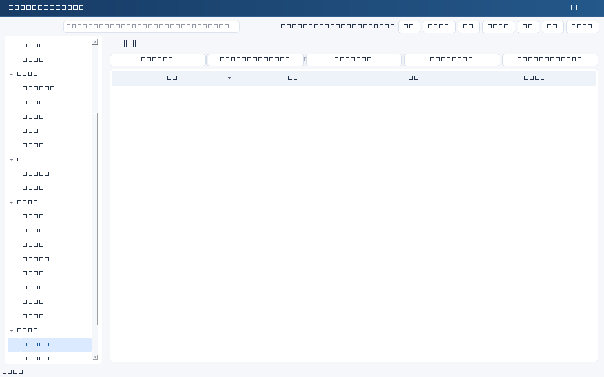

AI周报汇总
- 进入“汇报与草稿” → “AI周报汇总…”，选择模型（有多个启用模型时会询问）。
- 填写开始/结束日期与负责人范围。系统按记录的更新时间统计区间内事项，并补充区间结束时仍未结束且已过截止日期的逾期项。
- 确认外发授权；若范围内含人员、考核或权限记录，需要额外二次授权。
- 生成结果是一条<strong>待审核草稿</strong>，只包含统计数字与模型正文，不会自动批准或发送。
- 在草稿编辑器里逐条核对：完成事项必须能对应到“完成证据”，周期口径与负责人筛选要人工确认，模板中的生成时间/审核人占位需替换。
会议纪要转任务
- “汇报与草稿” → “会议纪要转任务…”，粘贴纪要正文并选择模型。
- 模型只做抽取，返回任务候选（名称、负责人、截止日期、优先级、下一步、验收标准）。
- 结果进入人工确认窗口：<strong>默认全部不勾选</strong>，逐条核对后再建立正式任务。
- 负责人只能填已有人员记录中的姓名，日期必须是 YYYY-MM-DD；模型给的无效值会被清空并在“需要复核”中列出原因。
- 确认后通过既有批量接口建立任务，来源记录为对应的AI调用编号，便于追溯；失败重试沿用同一请求编号。
边界：两个功能都可能产生费用，且都以“人审”为前提：AI不写业务记录、不建任务、不发送消息；周报结论与任务负责人/期限必须人工核实。人员与项目名单取自服务端真实记录，请求方无法伪造关联。会议纪要里出现的敏感内容会一并发送给模型，请先确认可以外发。

